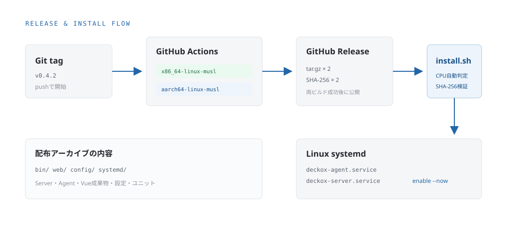

Installation
1つのコマンドから、2つのサービスを導入。
インストーラーはGitHub ReleaseからCPUに合うアーカイブを取得し、SHA-256を検証してServer・Agent・Vue・systemdユニットを配置します。
リリースから導入まで

対応CPUアーキテクチャ
| uname -m | Rust target | Release |
|---|---|---|
x86_64 / amd64 | x86_64-unknown-linux-musl | ビルド定義済み |
aarch64 / arm64 | aarch64-unknown-linux-musl | ビルド定義済み |
GitHub Actionsはx86-64とARM64を別Runnerでビルドします。両方が成功した場合にReleaseを作成します。
Releaseの作成
v*タグのpushでRelease Workflowが起動します。
git tag v0.2.0
git push origin main
git push origin v0.2.0Linuxへインストール
curl -fsSL \
https://raw.githubusercontent.com/scolor-dev/deckox/main/packaging/scripts/install.sh \
| sudo shスクリプトを確認してから実行する場合:
curl -fsSLO \
https://raw.githubusercontent.com/scolor-dev/deckox/main/packaging/scripts/install.sh
less install.sh
sudo sh install.sh特定バージョンを選ぶ場合:
curl -fsSL \
https://raw.githubusercontent.com/scolor-dev/deckox/main/packaging/scripts/install.sh \
| sudo DECKOX_VERSION=v0.2.0 shローカル配布物を検証する場合は、アーカイブと同じ場所に.sha256ファイルを置いて指定します。
sudo DECKOX_ARCHIVE=/tmp/deckox-aarch64-unknown-linux-musl.tar.gz \
sh install.shインストーラーが行う処理
- 1. 前提確認
- root権限と必要なLinuxコマンドの存在を確認
- 2. CPU判定
uname -mからx86-64またはARM64を選択- 3. 検証
- アーカイブとSHA-256ファイルを取得してハッシュを比較
- 4. ユーザー
deckoxグループとシステムユーザーを未作成の場合のみ作成- 5. 配置
- バイナリ、Vue成果物、設定、systemdユニットを配置
- 6. 認証
- 初回だけ管理者パスワードを生成し、Argon2idハッシュを配置。更新時は既存値を維持
- 7. 起動
deckox-agentとdeckox-serverをenableして即時起動
導入後の確認
systemctl status deckox-server deckox-agent
journalctl -u deckox-server -u deckox-agent -f初回インストール時は管理者パスワードがターミナルへ一度だけ表示されます。更新時は既存のパスワードが維持されます。
管理者パスワードを再設定する
printf '%s' '新しいパスワード' \
| sudo /usr/local/bin/deckox-server hash-password \
| sudo tee /etc/deckox/admin-password.hash >/dev/null
sudo chown root:deckox /etc/deckox/admin-password.hash
sudo chmod 0640 /etc/deckox/admin-password.hash
sudo systemctl restart deckox-server既定ではServerが127.0.0.1:8080で待ち受けます。別端末から一時的に確認する場合は、ssh -L 8080:127.0.0.1:8080 user@serverでトンネルを作成します。
LAN内の端末から常時アクセスする
サーバーのLANアドレスを確認し、そのアドレスだけへsystemdの待受設定を上書きします。次の例では192.168.1.21を使用します。
sudo systemctl edit deckox-server[Service]
Environment=DECKOX_LISTEN_ADDR=192.168.1.21:8080sudo systemctl restart deckox-server同じLANのMacやWindows PCからhttp://192.168.1.21:8080/を開きます。DHCPを利用している場合は、ルーター側でサーバーのアドレスを予約してください。
操作を許可するサービス
/etc/deckox/agent.tomlへ、起動・停止・再起動を許可するsystemdサービスを完全一致で指定します。初期値は空で、変更操作はすべて拒否されます。
[services]
allowed = [
"nginx.service",
"postgresql.service",
]変更後はAgentを再起動します。
sudo systemctl restart deckox-agent